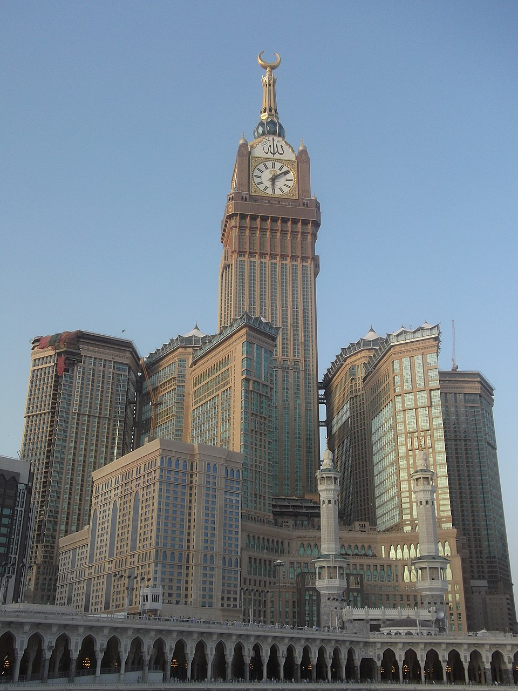
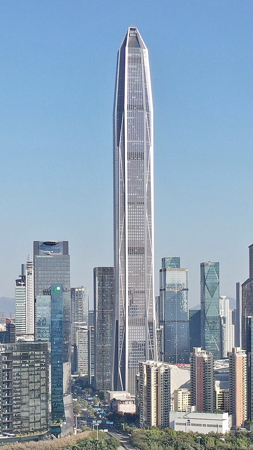
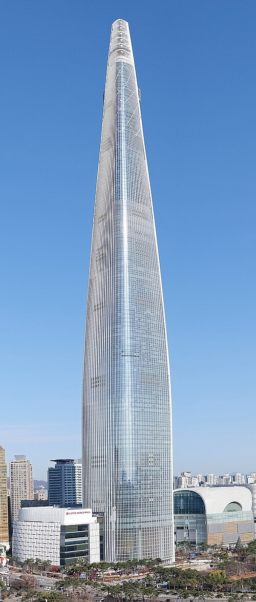
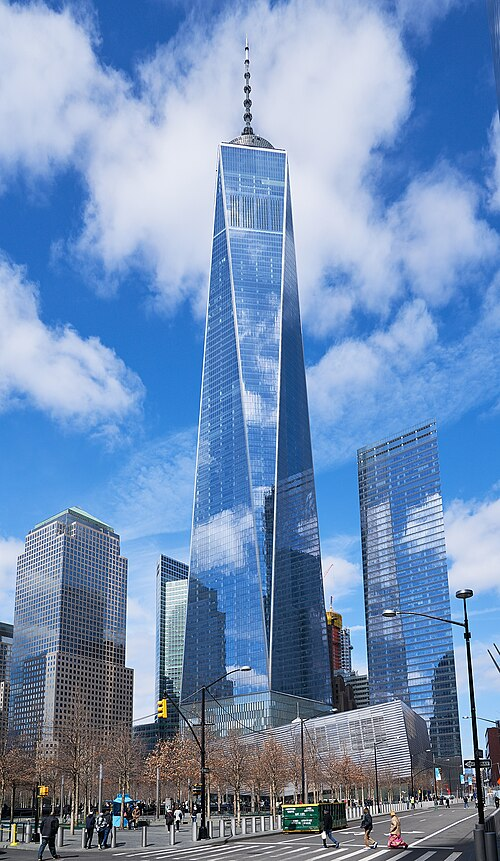
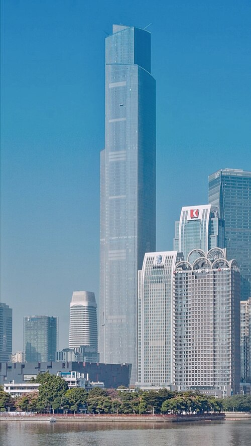
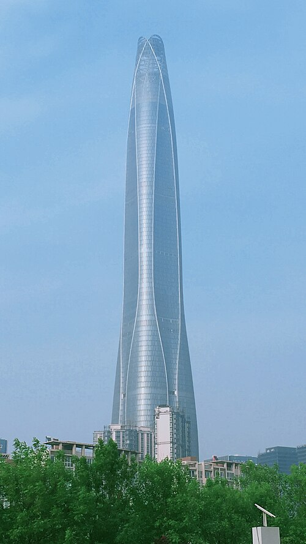
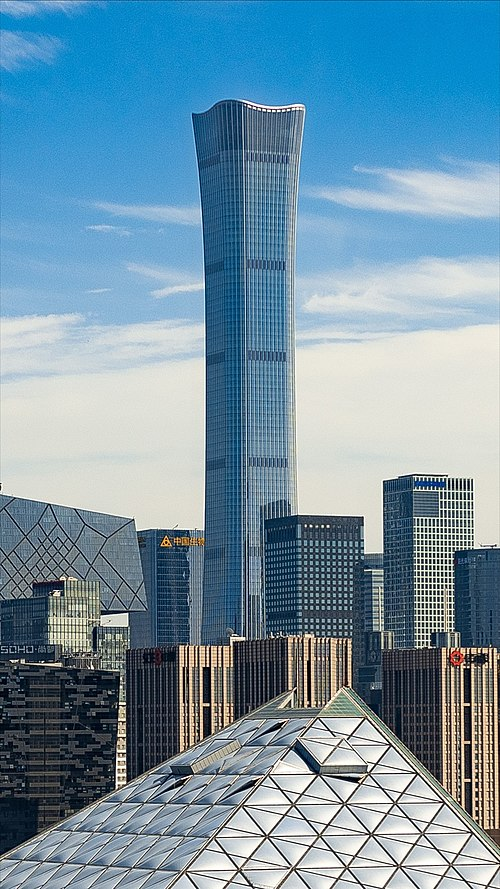

Ranking najwyższych budynków świata
1.Burdż Chalifa
Wieżowiec w Dubaju, w Zjednoczonych Emiratach Arabskich, zbudowany przez przedsiębiorstwa Samsung Constructions, BESIX i Arabtec, o wysokości 828 metrów[5]. Najwyższy budynek świata, który pobił rekord wysokości dla budowli dzierżony wcześniej przez polski Maszt radiowy w Konstantynowie (646m). Jego nazwa pochodzi od imienia szejka Chalify ibn Zajida Al Nahajjana, byłego prezydenta Zjednoczonych Emiratów Arabskich.
Budowa, rozpoczęta 21 września 2004, zakończyła się 16 sierpnia 2009. Wysokość 827,9 metrów została osiągnięta 17 stycznia 2009, a oficjalne otwarcie nastąpiło 4 stycznia 2010. Budynek ma 163 piętra użytkowe. Koszt jego budowy wyniósł 1,5 miliarda dolarów[6].

2.Merdeka 118
Także PNB 118 – wieżowiec w Kuala Lumpur, stolicy Malezji. Budynek ma 678,9 metra wysokości oraz 118 pięter[1]. Prace nad budynkiem zaczęły się w 2014 roku. Budowa została ukończona w 2023 roku, a 15 stycznia 2024 wieżowiec został oddany do użytku.
Rozwój Merdeki 118 jest finansowany przez Permodalan Nasional Berhad. Konstrukcja jest obecnie najwyższym budynkiem w Malezji, wyprzedzając Petronas Towers[2] oraz drugim pod względem wysokości do strukturalnego (architektonicznego) wierzchołka budynkiem na świecie.
80 ze 118 pięter zajmują biura, z czego 60 zajął inwestor obiektu. Poza tym w budynku znajdują się hotele, prywatne apartamenty, placówki administracyjne, a także parking, restauracja, vip club (na ostatnim piętrze) oraz centrum handlowe i rozrywkowe.

3.Shanghai Tower
Wieżowiec znajdujący się w dzielnicy Pudong w Szanghaju w bezpośrednim sąsiedztwie Jin Mao oraz SWFC. Budowa zaczęła się w 2008 r. jej zakończenie zaplanowano na rok 2015, ostatecznie budynek został oddany do użytku w roku 2017[1]. Inwestorem oraz wykonawcą jest Shanghai Tower Construction & Development Co., Ltd. reprezentująca trzy firmy: Shanghai Chengtou Corp., Luijiazui Finance & Trade Zone Development Co., Ltd., oraz Shanghai Construction Group. Wieżowiec zaprojektowało biuro architektoniczne Gensler. Koszt budowy wyniósł 2,4 mld $[1].
Wieżowiec jest najwyższym w Chinach oraz trzecim pod względem wysokości na świecie, niższym tylko od Burdż Chalifa w Dubaju w Zjednoczonych Emiratach Arabskich i Merdeka 118 w Kuala Lumpur w Malezji.

4.Abradż al-Bajt
kompleks hotelowy w Mekce, w Arabii Saudyjskiej, postmodernistyczny, wzniesiony w latach 2004–2011
według projektu zespołu architektów biura architektonicznego SL Rasch; znajduje się w bezpośrednim
sąsiedztwie Świętego Meczetu.Abradż al-Bajt znajduje się w pobliżu największego na świecie meczetu i
najświętszego miejsca islamu, Al-Masdżid al-Haram.Kompleks posiada kilka światowych rekordów, w tym
najwyższy hotel na świecie, najwyższy zegar wieżowy na świecie, największa na świecie tarcza zegara[1],
i największy na świecie budynek pod względem powierzchni.Kompleks stał się drugim pod względem wysokości
budynkiem na świecie w 2011 roku, ustępował tylko Burdż Chalifa w Dubaju. Projektantem i wykonawcą obiektu
jest Saudi Binladin Group, największa firma budowlana królestwa[2].

5.Ping An Finance Center
Wieżowiec w Shenzhen, w prowincji Guangdong, w Chińskiej Republice Ludowej. Wysokość całkowita budynku wynosi
599 m co czyni go najwyższym wieżowcem w Shenzhen i drugim co do wielkości w Chinach[2], został
otwarty w 2017 roku. Stał się najwyższym wieżowcem biurowym na świecie[3]. Powierzchnia budynku to
462 tysiące metrów kwadratowych[1].Koszt wybudowanie budynku to ok. 5,49 miliarda złotych.

6.Lotte World Tower
Wieżowiec w Seulu, w Korei Południowej o wysokości 555 m[1].
Został otwarty 3 kwietnia 2017 i jest najwyższym budynkiem w kraju[2]. Jest obecnie najwyższym
budynkiem w Korei Południowej i 6. najwyższym budynkiem na świecie.

7.One World trade center
(wcześniej pod nazwą Freedom Tower pol. Wieża Wolności) – jeden z czterech
nowojorskich wieżowców stanowiących część nowego kompleksu, który powstał w miejscu biurowców WTC
zniszczonych w wyniku zamachu z 11 września 2001. Jego wysokość wynosi 541 metrów, czyli 1776 stóp,
które symbolicznie oznaczają datę ogłoszenia Deklaracji Niepodległości Stanów Zjednoczonych[3].
Jest to najwyższy budynek w Stanach Zjednoczonych[4], a siódmy na świecie, po Burdż Chalify,
Merdece 118, Shanghai Tower, Abradż al-Bajt, Ping An Finance Center oraz Lotte World Tower[5].
Budynek został oddany do użytku i oficjalnie otwarty 3 listopada 2014 roku, 13 lat po zamachu[6].

8.Guangzhou CTF Finance Centre
nazywany także East Tower („Wieżą Wschodnią”), to 530-metrowy (1 739 stóp) wielofunkcyjny superwysoki wieżowiec w mieście
Kanton (Guangzhou) w prowincji Guangdong, ukończony w październiku 2016 roku. Jest to najwyższy
ukończony budynek w Kantonie, trzeci najwyższy w Chinach oraz ósmy najwyższy na świecie.
Guangzhou CTF Finance Centre ma łącznie 111 kondygnacji nadziemnych i pięć podziemnych, a w jego
wnętrzu znajdują się centrum handlowe, biura, apartamenty oraz hotel. Wieżowiec ma całkowitą
powierzchnię użytkową 507 681,0 m² (5 464 633 stóp kw.), z czego nieco ponad 20% nie należy do
samego wieżowca, lecz do połączonego z nim podium.

9.Tianjin Chow Tai Fook Binhai Center
Jest to superwysoki wieżowiec położony w dzielnicy centralnej
biznesowej Tianjin Economic-Technological Development Area w Binhai, Tianjin, Chiny. Budowę
rozpoczęto w 2013 roku, a ukończono w 2019 roku. Przy wysokości 1 739 stóp (530 m) i 97
kondygnacjach wieża jest drugim najwyższym budynkiem w mieście Tianjin — po wciąż nieukończonym
Goldin Finance 117 — ósmym najwyższym budynkiem na świecie oraz najwyższym budynkiem na świecie
mającym mniej niż 100 pięter. Znajduje się w zewnętrznej części Tianjin Economic-Technological
Development Area. Tianjin CTF Finance Center został zaprojektowany przez Skidmore, Owings & Merrill
LLP we współpracy z Ronald Lu & Partners.Budynek otrzymał nagrodę Tall/Slender Structure podczas
ceremonii nagród organizacji Institution of Structural Engineers (IStructE) w 2021 roku.

10.China Zun
wieżowiec w centralnej dzielnicy biznesowej Pekinu. Jest powszechnie znany jako CITIC
Tower. Posiada 109 kondygnacji oraz 528 metrów wysokości. Jest najwyższym budynkiem w mieście,
przewyższając Wieżowiec China World Trade Center Tower III o 190 metrów[1][2]. Konstrukcja budynku
została ukończona pod koniec 2018 r., Co czyni CITIC Tower najwyższym na świecie ukończonym budynkiem
2018 r.[3]Przydomek China Zun pochodzi od zun, starożytnego naczynia do wina, który zainspirował
twórców budynku. Uroczystość wmurowania kamienia węgielnego pod budowę odbyła się w Pekinie 19
września 2011 r.[4] China Zun to budynek wielofunkcyjny, składający się z 60 pięter biurowych, 20
pięter luksusowych apartamentów i 20 pięter hotelu z 300 pokojami na najwyższym piętrze na wysokości
